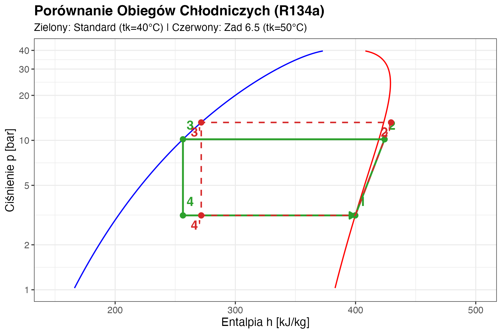

Ćwiczenie 6: IAgregat wody lodowej (Chiller)
🏭 Projekt: Etap 6 - Chłodzenie Hali
Hala produkcyjna o powierzchni \(2000 \text{ m}^2\) generuje \(300 \text{ kW}\) zysku ciepła od maszyn. Musimy zaprojektować Agregat Wody Lodowej (Chiller), który odbierze to ciepło.
Założenia:
- Moc chłodnicza: \(Q_{o} = 300 \text{ kW}\).
- Czynnik chłodniczy: R134a.
- Temperatura parowania: \(t_o = 2^\circ C\).
- Temperatura skraplania: \(t_k = 40^\circ C\).
Pytania Inwestora:
- Jaką moc elektryczną pobierze sprężarka? (\(N_{el}\))
- Ile ciepła musimy wyrzucić na dach (skraplacz)? (\(Q_k\))
- Czy urządzenie będzie efektywne? (\(EER\))

🧊 Zadanie 6.1: Obieg Lindego na Wykresie p-h
Przeanalizujmy obieg teoretyczny (bez strat ciśnienia i dochłodzenia/przegrzania).
Krok 1: Odczyt z Wykresu p-h (R134a)
- Punkt 1 (Ssanie): Para nasycona sucha (\(x=1\)) przy \(t_o = 2^\circ C\).
- \(h_1 \approx 400 \text{ kJ/kg}\)
- Punkt 2 (Tłoczenie): Sprężanie izentropowe (\(s=const\)) do ciśnienia nasycenia \(t_k = 40^\circ C\).
- \(s_1 \approx 1.72 \rightarrow s_2 \approx 1.72\).
- \(h_2 \approx 425 \text{ kJ/kg}\) (ODCZYT Z WYKRESU).
- Punkt 3 (Skraplacz): Ciecz nasycona (\(x=0\)) przy \(t_k = 40^\circ C\).
- \(h_3 \approx 256 \text{ kJ/kg}\).
- Punkt 4 (Dławienie): Izenthalpa (\(h=const\)).
- \(h_4 = h_3 = 256 \text{ kJ/kg}\).
- Moc chłodnicza: \(Q_{o} = 300 \text{ kW}\)
- Czynnik: R134a
- Temp. parowania: \(t_o = 2^\circ C\)
- Temp. skraplania: \(t_k = 40^\circ C\)
⚡ Zadanie 6.2: Bilans Energetyczny
Bilans Energetyczny (Jednostkowy):
\(q_o = h_1 - h_4 = 400 - 256 = \mathbf{144 \text{ kJ/kg}}\) (Chłodzenie użyteczne)
\(l_k = h_2 - h_1 = 425 - 400 = \mathbf{25 \text{ kJ/kg}}\) (Praca sprężania)
\(q_{sk} = h_2 - h_3 = 425 - 256 = \mathbf{169 \text{ kJ/kg}}\) (Ciepło skraplania - odpadowe)
Weryfikacja I Zasady
\[ q_o + l_k = 144 + 25 = 169 = q_sk \] \[ Energia_{in} = Energia_{out} \quad (OK!) \]
Parametry wejściowe::
- Moc chłodnicza: \(Q_{o} = 300 \text{ kW}\).
- Czynnik chłodniczy: R134a.
- Temperatura parowania: \(t_o = 2^\circ C\).
- Temperatura skraplania: \(t_k = 40^\circ C\).
Entalpie (z Wykresu):
- \(h_1 = 400\) kJ/kg
- \(h_2 = 425\) kJ/kg
- \(h_3 = 256\) kJ/kg
- \(h_4 = 256\) kJ/kg
💰 Zadanie 6.3: Moc i Efektywność
Strumień Czynnika:
Musimy odebrać 300 kW ciepła z hali (\(Q_o\)). \[ \dot{m} = \frac{Q_o}{q_o} = \frac{300 \text{ kJ/s}}{144 \text{ kJ/kg}} \] \[ \dot{m} \approx \mathbf{2.08 \text{ kg/s}} \]
Moc Sprężarki: \[ N_{el} = \dot{m} \cdot l_k = 2.08 \cdot 25 \] \[ N_{el} \approx \mathbf{52 \text{ kW}} \]
Efektywność (COP/EER): \[ EER = \frac{Q_o}{N_{el}} = \frac{300}{52} \] \[ EER \approx \mathbf{5.77} \]
Wniosek: Urządzenie jest bardzo efektywne! Na każdy 1 kW prądu uzyskujemy prawie 6 kW chłodu.
Parametry wejściowe:
- Moc chłodnicza: \(Q_{o} = 300 \text{ kW}\).
- Czynnik chłodniczy: R134a.
- Temperatura parowania: \(t_o = 2^\circ C\).
- Temperatura skraplania: \(t_k = 40^\circ C\).
Entalpie:
- \(h_1=400, h_2=425, h_3=256, h_4=256\)
Wielkości Jednostkowe:
- \(q_o = 144\) kJ/kg
- \(l_k = 25\) kJ/kg
- \(q_{sk} = 169\) kJ/kg
🔄 Zadanie 6.4: Pompa Ciepła z Tego Samego Obiegu
Skoro skraplacz wyrzuca \(Q_k = 352 \text{ kW}\) ciepła na dach… Czy moglibyśmy zimą odwrócić logikę i wykorzystać to ciepło do ogrzewania biur?
Ten sam obieg, ale patrząc jako Pompa Ciepła: \[ COP_{PC} = \frac{Q_k}{N_{el}} = \frac{352}{52} \approx \mathbf{6.77} \]
Na każdy 1 kW prądu dostajemy 6.77 kW ciepła do ogrzewania! Porównaj z grzejnikiem elektrycznym (\(COP = 1\)) lub kotłem gazowym (\(\eta \approx 0.95\)).
Note
Ale uwaga: Zimą \(t_o\) (dolne źródło) musi być wyższe niż zamarzanie → potrzebujemy np. gruntu, ścieków, lub powietrza zewnętrznego. Zmieni to parametry obiegu!
Parametry wejściowe:
- Moc chłodnicza: \(Q_{o} = 300 \text{ kW}\).
- Czynnik chłodniczy: R134a.
- Temperatura parowania: \(t_o = 2^\circ C\).
- Temperatura skraplania: \(t_k = 40^\circ C\).
Wyniki chłodnicze:
- \(q_o = 144\) kJ/kg
- \(l_k = 25\) kJ/kg
- \(\dot{m} = 2.08\) kg/s
- \(N_{el} = 52\) kW
- \(EER = 5.77\)
- Całkowite ciepło skraplania: \(Q_k = Q_o + N_{el} = 352\) kW
🌡️ Zadanie 6.5: Wpływ Temperatury Skraplania na EER
Jak zmieni się EER, jeśli latem temperatura na dachu wzrośnie i skraplacz będzie pracował przy \(t_k = 50^\circ C\) zamiast \(40^\circ C\)?
Odczyt z wykresu p-h (R134a, tk=50°C)
- \(h_1 = 400\) kJ/kg (bez zmian — parowanie \(2^\circ C\))
- \(h_2 \approx 440\) kJ/kg (sprężanie do wyższego ciśnienia → więcej pracy)
- \(h_3 \approx 272\) kJ/kg (wyższe ciśnienie → wyższa entalpia cieczy)
\[ q_o = 400 - 272 = 128 \text{ kJ/kg} \quad (\text{było } 144) \] \[ l_k = 440 - 400 = 40 \text{ kJ/kg} \quad (\text{było } 25) \] \[ EER = \frac{128}{40} = \mathbf{3.20} \quad (\text{było } 5.77) \]
Pogorszenie o 45%! Moc sprężarki wzrasta, a wydajność chłodnicza maleje.
Dlatego skraplacze na dachach wyposażone są w wentylatory i zraszanie wodą — każdy stopień obniżenia \(t_k\) poprawia EER!
Wizualizacja: Wpływ temperatury skraplania (\(t_k\))
Analiza Zadań 6.1 (Standard) i 6.5 (Podwyższone \(t_k\)).
Wniosek: Podniesienie temperatury skraplania (Czerwony obieg 2’) powoduje:
- Wzrost pracy sprężania (\(h_{2'} > h_2\)).
- Przestunięcie punktu dławienia w prawo (\(h_{3'} > h_3\)) → Mniejsza wydajność chłodnicza \(q_o\).
🧊 Zadanie 6.6: Porównanie Czynników (R134a vs R290)
Rozważamy zamianę R134a (GWP=1430) na R290 (propan, GWP=3). Czy warto?
Odczyt z wykresu p-h (R290, to=2°C, tk=40°C)
- \(h_1 \approx 570\) kJ/kg, \(h_2 \approx 625\) kJ/kg
- \(h_3 \approx 280\) kJ/kg, \(h_4 = h_3\)
\[ q_o = 570 - 280 = \mathbf{290 \text{ kJ/kg}} \quad (\text{R134a: } 144) \] \[ l_k = 625 - 570 = \mathbf{55 \text{ kJ/kg}} \quad (\text{R134a: } 25) \] \[ EER = 290/55 = \mathbf{5.27} \]
Parametry wejściowe::
- Moc chłodnicza: \(Q_{o} = 300 \text{ kW}\).
- Czynnik chłodniczy: R134a.
- Temperatura parowania: \(t_o = 2^\circ C\).
- Temperatura skraplania: \(t_k = 40^\circ C\).
R134a (Referencja):
- \(q_o = 144\) kJ/kg
- \(l_k = 25\) kJ/kg
- \(EER = 5.77\)
R290 (Propan):
- \(h_1 = 570\) kJ/kg
- \(h_2 = 625\) kJ/kg
- \(h_3 = 280\) kJ/kg
🧊 Zadanie 6.6 (cd.): Wnioski
Strumień czynnika: \(\dot{m}_{R290} = 300/290 = \mathbf{1.03 \text{ kg/s}}\) (R134a: \(2.08\) kg/s — połowę mniej!)
Warning
R290 ma lepszą wydajność objętościową i zerowy wpływ na warstwę ozonową. Ale jest palny! Wymaga specjalnych zabezpieczeń (ATEX).
💧 Zadanie 6.7: Dobór Rurociągu Ssawnego
Ile wynosi prędkość czynnika R134a w rurociągu ssawnym o średnicy \(d = 80 \text{ mm}\)?
Z wykresu p-h: Na ssaniu (\(2^\circ C\), para nasycona) objętość właściwa \(v_1 \approx 0.065 \text{ m}^3/\text{kg}\).
\[ \dot{V} = \dot{m} \cdot v_1 = 2.08 \cdot 0.065 = 0.135 \text{ m}^3/\text{s} \]
Przekrój rury: \[ A = \frac{\pi d^2}{4} = \frac{\pi \cdot 0.08^2}{4} = 0.00503 \text{ m}^2 \]
\[ w = \frac{\dot{V}}{A} = \frac{0.135}{0.00503} \approx \mathbf{26.8 \text{ m/s}} \]
Tip
Dopuszczalna prędkość w rurociągu ssawnym: 8-15 m/s. Nasza rura jest za mała! Potrzebujemy \(d \approx 120 \text{ mm}\). Zbyt duża prędkość → spadki ciśnienia → spadek EER.
🏠 Zadanie Domowe (Raport 6)
Temat: Rzeczywisty Obieg Chłodniczy.
W praktyce występują straty i dodatkowe procesy poprawiające efektywność.
- Aby chronić sprężarkę przed cieczą, stosuje się Przegrzanie Par na ssaniu o \(\Delta T_{sh} = 5 K\) (czyli \(t_1 = 2 + 5 = 7^\circ C\)).
- Aby zwiększyć wydajność, stosuje się Dochłodzenie Cieczy przed dławieniem o \(\Delta T_{sc} = 5 K\) (czyli \(t_3 = 40 - 5 = 35^\circ C\)).
Zadanie: Narysuj nowy obieg na wykresie p-h i oblicz nowy wskaźnik EER. Czy dochłodzenie poprawia, czy pogarsza sprawność?
Tip
Pamiętaj: Przegrzanie zwiększa pracę sprężania (\(l_k\)), ale Dochłodzenie zwiększa chłodzenie użyteczne (\(q_o\)). Jaki będzie bilans netto?

Termodynamika Techniczna - Ćwiczenia Projektowe